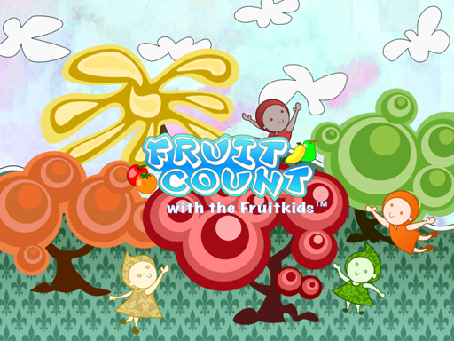
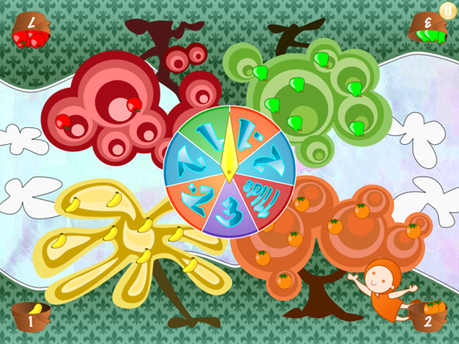
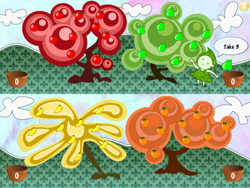

Fruit Count Screenshots

1. Introduction Screen

2. Game in "Table-top" Mode

3. Game in "Hand-held" Mode
Note: The screenshots shown here are representitive of Fruit Count running on the iPad. Fruit Count is an iOS universal app and is also supported on iPhone and iPod Touch. Due to the smaller screen on iPhone and iPod, the active player quadrant is fitted to the screen.